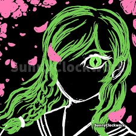

SLB-006-C
Item #: SLB-006
คลาสวัตถุ: Keter
มาตรการกักกัน:SLB-006ถูกฝังอุปกรณ์ติดตามตัวไว้ SLB-006จะต้องอยู่กับเจ้าหน้าที่ที่ได้รับอนุญาตหรือSLB-██ตลอดเวลาการอยู่ค้าางนอก นั้นจะรับสิทธิออกไปที่กักกันเมื่อเจ้าหน้าที่หรือSLB-██อนุมัติ เจ้าหน้าที่คนใดที่เข้าใกล้SLB-006 จะต้องพกพา Scranton Reality Anchor เพื่อป้องกันการเปลี่ยนแปลงสภาพ เมื่อเกิดเหตุการณ์006-Cกำลังหรือจะสามารถหลุดออกมาต้องส่งเจ้าหน้าที่จำนวนมากเพื่อเข้าไปใช้ยาระงับ██เพื่อ006-C SLB-006ห้ามเข้าใกล้SLB-006-Bห้ามเข้าใกล้และSLB-006-Bเก็บไว้ในตู้เซฟที่มีระดับความปลอดภัย 4 ห้องกักกันต้องติดตั้งระบบ SIMULACRUM เพื่อยับยั้งการรับรู้ของห้ามนำภาพถ่ายหรือกล้องถ่ายภาพใดๆ เข้าใกล้SLB-006 SLB-006-C รูปที่เคยถูกถ่ายโดย SLB-006-b ให้ตั้งเป็นพื้นที่อันตรายในระยะ 20 เมตรและห้ามเข้าใกล้ไม่ว่าจะในกรณีใดก็ตาม ต้องบำรุงรักษาเครื่องเลเธทุกเดือนต้องวางยาสลบSLB-006 และรีบบำรุงให้เร็วที่สุดต้องมีเจ้าหน้าที่อีกกลุ่มคอยเฝ้าระวังในระหว่างการบำรุง
รายละเอียด:เป็นมนุษย์เพศหญิงเชื้อสายยุโรปผมยาวสีบลอนด์หม่นและดวงตาสีฟ้า ส่วนสูง 170 เมตร น้ำหนัก 70 กิโลกรัม ที่เป็นร่างทรงให้กับมารดาแห่งอสุรกายรูปร่างของมันแตกต่างกันไปตามผู้สังเกต เว้นลักษณะพิเศษต่อไปนี้ดวงตาข้างซ้ายได้ถูกทำลายลงหลังจากเหตุการณ์ 006XK และมัดผ้าพันแผลไว้ตลอดเวลาสมองฝั่งซ้ายต้องปิดเครื่องเลเธ เงาจะไม่สะท้อนออกมาเป็นSLB-006 แต่จะSLB-006-C แขนมีโครงสร้างคล้ายงูมีเกร็ดขึ้นและเลยได้แบบงูแต่ก็ยังสามารถจับสิ่งของได้เหมือนเดิมตามร่างกายบางส่วนจะมีรอยสักที่คล้ายเกล็ดงู
SLB-006-C มีลักษณะสิ่งมีชีวิตขนาดยักษ์ที่มีลักษณะเหมือนเทพเจ้า มีความยาวประมาณ 50 เมตร รูปร่างของมันแตกต่างกันไปตามผู้สังเกต แต่มีองค์ประกอบบางอย่างที่คงที่ ได้แก่ ส่วนบนที่มีลักษณะคล้ายมนุษย์แต่มีลักษณะคล้ายสัตว์เลื้อยคลาน ส่วนล่างเป็นสัตว์เลื้อยคลานโดยสมบูรณ์ มีเกล็ดและเท้าที่มีกรงเล็บ หากมีขาอยู่ และเมื่อถูกขังในเครื่องเลเธจะมีลักษณะของสาวญี่ปุ่นผมสีเขียวดวงตาสีเหลืองม่านตาแบบงู
SLB-006 สามารถยื่นแขนออกได้ไกลสุด 10 เมตร มีกพละกำลังที่ผิดธรรมชาติและความสามารถในการพ่นไฟแล้ว เงาสามารถเคลื่อนที่ได้เอง
เมื่อถ่ายรูปSLB-006 รูปภาพด้านในโลกจำลองของSLB-006-C ภาพส่วนใหญ่จะเป็นประเทศญี่ปุ่น เมื่อSLB-006ถ่ายรูปด้วยSLB-006-Bพื้นที่ตรงนั้นจะความสามารถในการย่อยสลายสิ่งมีชีวิตระยะ 20 เมตร สิ่งมีชีวิตที่เข้าจะถูกย่อยสลายและกลายเป็นก้อนเนื้อมารวมตัวกันกลายเป็นสิ่งที่มีลักษณะคล้ายไข่กระบวนการนี้เจ็บปวดอย่างมาก เมื่อมนุษย์ฟักออกมาจะกลายเป็นสิ่งมีชีวิตครึ่งมนุษย์ครึ่งสัตว์ที่จะเชื่อฟัง SLB-006-C โดยสัดส่วนใหญ่จะเป็นสัตว์จาก 12 นักษัตร ในตัวอย่างที่ไม่มีชีวิต3พบกระบวนการที่คล้ายคลึงกันแต่ไม่มีชีวิต การผ่าตัวอย่างเหล่านี้แสดงให้เห็นถึงการหลอมรวมของวัสดุอินทรีย์ใหม่กับวัสดุอนินทรีย์ที่มีระบบไหลเวียนโลหิตและระบบประสาทที่คล้ายคลึงกัน ภายในความเป็นจริงสิ่งที่คิดอะไรที่เข้าไปจะไม่เห็นลักษณะผิดปกติแต่เมื่อมนุษย์ที่ฟักออกมาแล้วจะปรากฏลักษณะผิดปกติทุกประการ